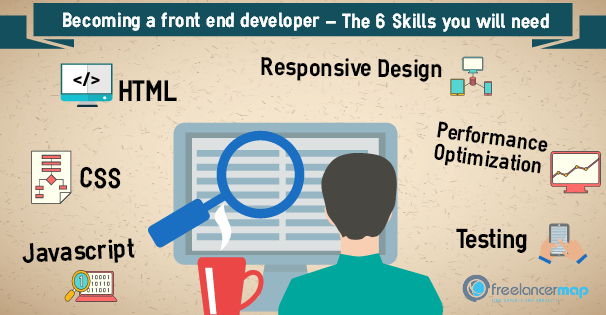
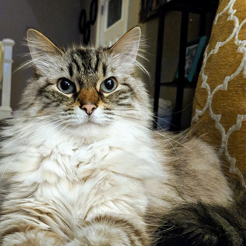

Front End Developer Posted on 2020-11-18 10:04:24
While web design is the way a website looks, front end development is how that design actually gets implemented on the web.A front end web developer is the person who implements web designs through coding languages like HTML, CSS, and JavaScript. Though it’s not as common anymore, front end developers are/were sometimes called “client-side developers” to distinguish them from back end developers who program what goes on behind the scenes (like databases). If you head to any site, you can see the work of a front end developer everywhere—in the navigation, layouts including this article page, even the way that a site looks different from your phone (thanks to mobile-first or responsive design). Want more? You can read our guide on everything it takes to start a web developer career here. Now that we’ve got that out of the way, this article will break down some of the key skills front end web developers use on the job.
About Cats Posted on 2020-11-25 11:06:24
Your donation to the Animal Defense League of Texas will immediately impact the lives of the thousands of abandoned, abused, or neglected dogs and cats by providing needed medical care, food, shelter, and safety. With a 4-star rating from Charity Navigator, you can donate in confidence that every dollar is utilized responsibly. As San Antonio’s oldest no-kill shelter, we continue to lead the city towards its live-release goals. Please, help us save more homeless pets by making a donation today! All donations are tax deductible and our 501c3 Letter, ADL W-9 form, and 2019 ADL Annual Report are available for download. Please be sure to also view our 2019 Audited Financial Statements. To request a copy of ADL’s 2018 990, please send your request to Joel McLellan, ADL Executive Director. The Animal Defense League of Texas will never share or sell a donor’s personal information with anyone else, nor send donor mailings on behalf of other organization
C# Application Posted on 2020-11-26 11:17:26
C# (pronounced see sharp, like the musical note C♯, but written with the number sign)[b] is a general-purpose, multi-paradigm programming language encompassing static typing, strong typing, lexically scoped, imperative, declarative, functional, generic, object-oriented (class-based), and component-oriented programming disciplines.[16] C# was developed around 2000 by Microsoft as part of its .NET initiative and later approved as an international standard by Ecma (ECMA-334) in 2002 and ISO (ISO/IEC 23270) in 2003. It was designed by Anders Hejlsberg, and its development team is currently led by Mads Torgersen, being one of the programming languages designed for the Common Language Infrastructure (CLI). The most recent version is 9.0, which was released in 2020 in .NET 5.0 and included in Visual Studio 2019 version 16.8.[17][18] Mono is a free and open-source project to develop a cross-platform compiler and runtime environment (i.e. virtual machine) for the language.